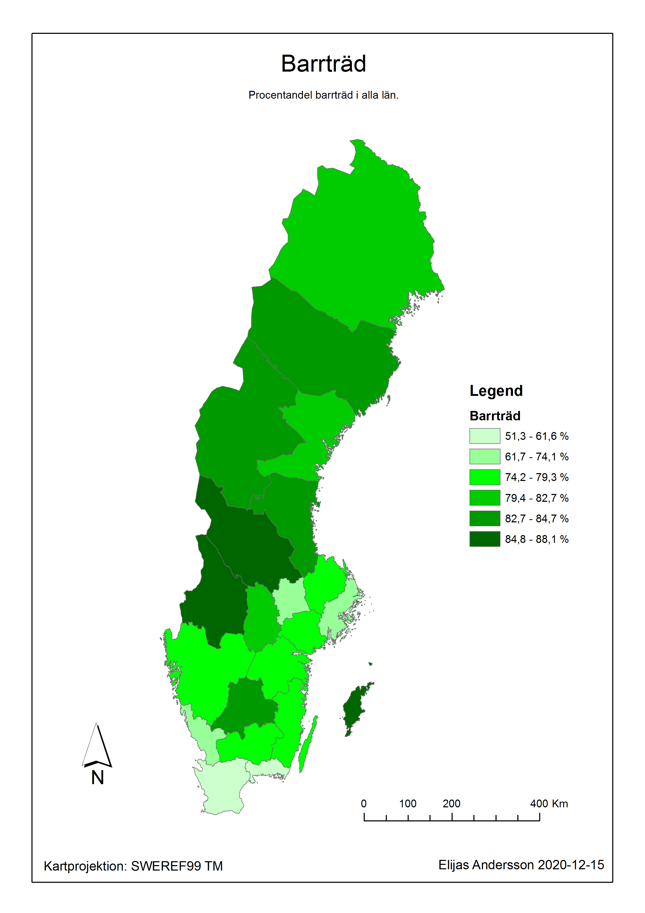

Portfolio
Lingån i Frisbo, Bjuråker, Hälsingland
Karta över Lingåns sträckning, en jämförelse mellan år 1856 och 2020.

Trädslagsfördelning i Sverige
Sverigekarta med pajdiagram över vilka trädslag som dominerar i Götaland, Svealand, Södra Norrland och Norra Norrland.

Barrträd i Sverige
Sverigekarta som visar procentandel barrträd i Sveriges län.
